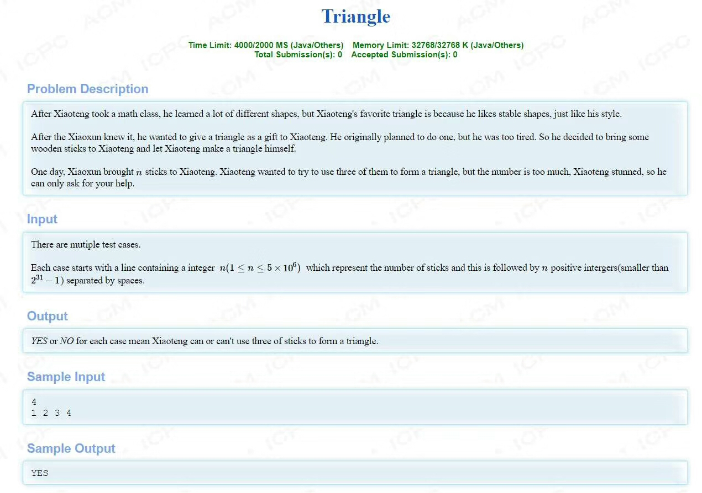
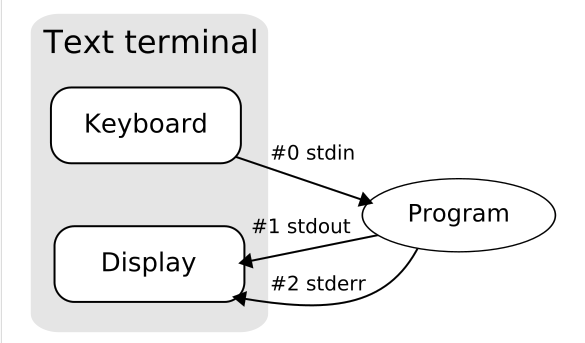
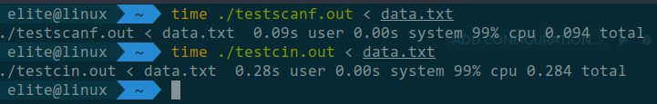
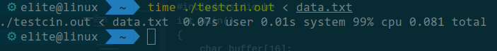
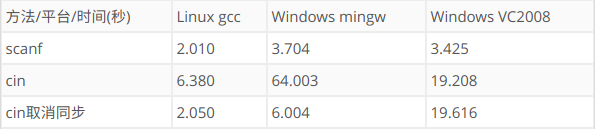
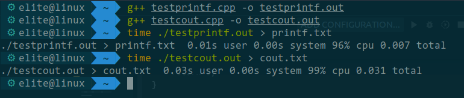
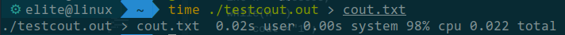

[c/c++]关于输入输出
这篇文章很久之前就想写了，可是一直都很忙，现在终于可以开始慢慢的写啦～
因为拿到了GDCPC的名额，所以在4.19晚上打了一场双鸭山大学的ACM校赛重现赛，先来看一道水题吧

题目的意思非常的简单，就是输入一串数字，让你判断是否有3个数字能够构成三角形。我们很小的时候就知道三角形满足两边之和大于第三边，所以很快就能够想到一个算法来解这一题。
1 |
|
这个算法肯定是正确的，也是当时我们想到的最好的算法了（不过题解并不是如此，后面会给出题解），于是我们就提交了一发。
TLE！！！
超时，这个算法的复杂度达到了O(nlogn)，被卡了时间，因为我们当时实在想不出更好的算法，并且这一题非常多人A了，所以我们就瞎j8改代码，疯狂的测试。
1 |
|
还是继续TLE！！！我们再来看一个代码，和第一个很类似，就多了一行而已！
1 |
|
感动天感动地的AC终于出现了！！！
那么 ios::sync_with_stdio(false) 究竟有什么用呢？
从函数的名字来看是关闭和stdio的同步，并且关闭同步后输入输出的速度快了不少，使我们成功AC了这一题。
其实这题的正确姿势是这样的，若一串数列不能找出三个数字组成一个三角形，那么它们必定没有三个数能够满足两边之和大于第三边，再想一想斐波那契数列，如果你之前看到这个题目没有想到斐波那契数列的话，看到这应该会有一种恍然大悟的感觉，并且数列中的每一个数字是不大于2^31-1的，而斐波那契数列的第47项就已经大于这个范围了，也就是说，当数列的长度大于等于47，那么它们肯定有三个数字能够构成三角形。
当数列长度小于47时，就用排序加遍历的方法判断，当数列长度大于等于47时，直接输出YES即可。
很明显这一题的数据就是卡将数列排序再遍历一次的算法，然而却被我们用小技巧AC了。
虽然AC了，但是我对c/c++的输入输出产生了兴趣，以前我从来都没有想过输入输出的实现方法和它们之间的区别，从那一晚起我就想要寻找到我想要的答案并且下这一篇blog，然而之后的一段时间事情实在太多，一拖再拖，到现在终于有点时间了。
Stream
stream，也就是大家熟知的流，什么是流呢？我在stdio.h文档找到了以下的一段介绍
This library uses what are called streams to operate with physical devices such as keyboards, printers, terminals or with any other type of files supported by the system. Streams are an abstraction to interact with these in an uniform way; All streams have similar properties independently of the individual characteristics of the physical media they are associated with.
我还在一本书上找到下面的一段介绍
Input and output, whether to or from physical devices such as terminals and tape drives, or whether to or from files supported on structured storage devices, are mapped into logical data streams, whose properties are more uniform than their various inputs and outputs. Two forms of mapping are supported: text streams and binary streams.
A text stream consists of one or more lines. A line in a text stream consists of zero or more characters plus a terminating new-line character. (The only exception is that in some implementations the last line of a file does not require a terminating new-line character.) Unix adopted a standard internal format for all text streams. Each line of text is terminated by a new-line character. That’s what any program expects when it reads text, and that’s what any program produces when it writes text. (This is the most basic convention, and if it doesn’t meet the needs of a text-oriented peripheral attached to a Unix machine, then the fix-up occurs out at the edges of the system. Nothing in between needs to change.) The string of characters that go into, or come out of a text stream may have to be modified to conform to specific conventions. This results in a possible difference between the data that go into a text stream and the data that come out. For instance, in some implementations when a space-character precedes a new-line character in the input, the space character gets removed out of the output. In general, when the data only consists of printable characters and control characters like horizontal tab and new-line, the input and output of a text stream are equal.
Compared to a text stream, a binary stream is pretty straight forward. A binary stream is an ordered sequence of characters that can transparently record internal data. Data written to a binary stream shall always equal the data that gets read out under the same implementation. Binary streams, however, may have an implementation-defined number of null characters appended to the end of the stream. There are no further conventions which need to be considered.
Nothing in Unix prevents the program from writing arbitrary 8-bit binary codes to any open file, or reading them back unchanged from an adequate repository. Thus, Unix obliterated the long-standing distinction between text streams and binary streams.
同时我在这本书中还发现了这两段话
When a C program starts its execution the program automatically opens three standard streams named stdin, stdout, and stderr. These are attached for every C program.
The first standard stream is used for input buffering and the other two are used for output. These streams are sequences of bytes.
每一个c程序都会打开stdin、stout和stderr这三个流，第一个用于输入，后两个用于输出，最后那个是用于输出错误信息的。最重要的是最后那一句话These streams are sequences of bytes. 这些流是字节串。

流其实是一个比较抽象的概念，因为输入设备和输出设备非常的多样化，所以c为了统一输入输出的方式，提出了流的概念，按照我通俗的理解，CPU是一个大工厂，而I/O设备就是运送原材料的大货车，大货车将车上的货物一件件的交到大工厂，一件件的货物就是流。
Buffer
我在c/c++的文档中找到了对Buffer的定义
A buffer is a block of memory where data is accumulated before being physically read or written to the associated file or device. Streams can be either fully buffered, line buffered or unbuffered. On fully buffered streams, data is read/written when the buffer is filled, on line buffered streams this happens when a new-line character is encountered, and on unbuffered streams characters are intended to be read/written as soon as possible.
Buffer翻译过来的话就是缓冲区，根据输入和输出，缓冲区可以分为输入缓冲和输出缓冲，它其实就是一块内存而已，输入缓冲区用来暂存从外设输入进来的内容，输出缓冲区就是用来暂存要输出在外设的内容。
为什么我们需要缓冲区这种东西呢？主要是为了解决低速的I/O设备与高速的CPU速度不匹配的问题，想象一下大工厂(CPU)里的工人需要在门口等待大货车(I/O设备)送货进来，而大货车是比较慢的，工人们其实可以去做别的事情，而不需要苦苦等待浪费时间，为了解决这种CPU利用率低的情况，我们引入了缓冲区，把缓冲区想象成传送带，工人不需要一直在门口等待货车送货进来，大货车将货物放到传送带上即可。
并且流分为全缓冲、行缓冲和不缓冲三种。
全缓冲
等到缓冲区满了以后才执行真正的I/O操作
行缓冲
遇到换行符执行真正的I/O操作
不缓冲
顾名思义就是不进行缓冲，比如stderr，需要立刻输出信息
测试C/C++标准输入输出的速度
scanf/cin和printf/cout都是带缓冲的，当调用scanf/cin时，它们会先去看看缓冲区有没有数据，若有的话会先从缓冲区读入，若缓冲区空的话，就会等待输入，printf/cout同理
为了测试scanf和cin、printf和cout之间速度的差异，我在自己的笔记本上做了一个小实验，我的系统环境是ubuntu18.04，不同的系统和配置都可能产生不同的结果。
生成测试数据
为了测试scanf和cin，肯定得有输入数据才行，我生成了1000000行1111111111111111的文本文件来测试
1 | yes 1111111111111111 | head -1000000 > data.txt |
scanf vs cin
测试文件分别如下
1 | //testcin.cpp |
1 | //testscanf.cpp |
编译
1 | g++ testcin.cpp -o testcin.out |
运行
1 | time ./testcin.out < data.txt |
结果如下

很明显scanf比cin快很多
我又测试了一下关闭同步的cin的速度，测试代码如下
1 | //testcin.cpp |
测试结果如下

可以看到关闭同步的cin和scanf速度差不多，这是因为C++为了兼容C，使得scanf和cin可以同时使用，所以让cin和scanf保持同步，这就使得cin花了一些时间在处理同步上。当使用cin而不使用scanf时，可以关闭同步来提高cin的速度，若在混用scanf和cin时关闭了同步，就可能会导致一些错乱，不建议这么做。
我在网上找到了别人在不同的系统和编译器环境下测试的结果，测试数据是55MB的文件。

printf vs cout
其实输出和输入差不多，不过也做个简单的测试吧
1 | //testprintf.cpp |
1 | //testcout.cpp |
编译
1 | g++ testprintf.cpp -o testprintf.out |
运行
1 | time ./testprintf.out > print.txt |
结果如下

关闭同步再测试一次
1 | //testcout.cpp |
结果如下

同样，关闭同步后速度更快了，原理和输入是一样的。
如果在关闭同步后混用printf和cout的话，可能会导致输出的顺序错乱，不过我试了几次都没成功。
算法竞赛的奇技淫巧——快读快写
其实在算法竞赛当中早就有比scanf/cin和printf/cout更快的奇技淫巧了（我也是这次写博文查资料才知道的，真是太菜了），称为快读和快写，据测试比scanf/printf和关闭同步的cin/cout更加快
1 | //针对正负整数的快读快写 |
快读快写终究只是小技巧，降低算法的复杂度才是王道！（留下了没技术的眼泪.jpg）
溜了溜了～